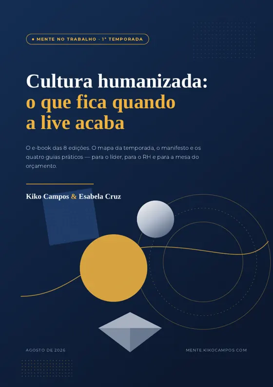
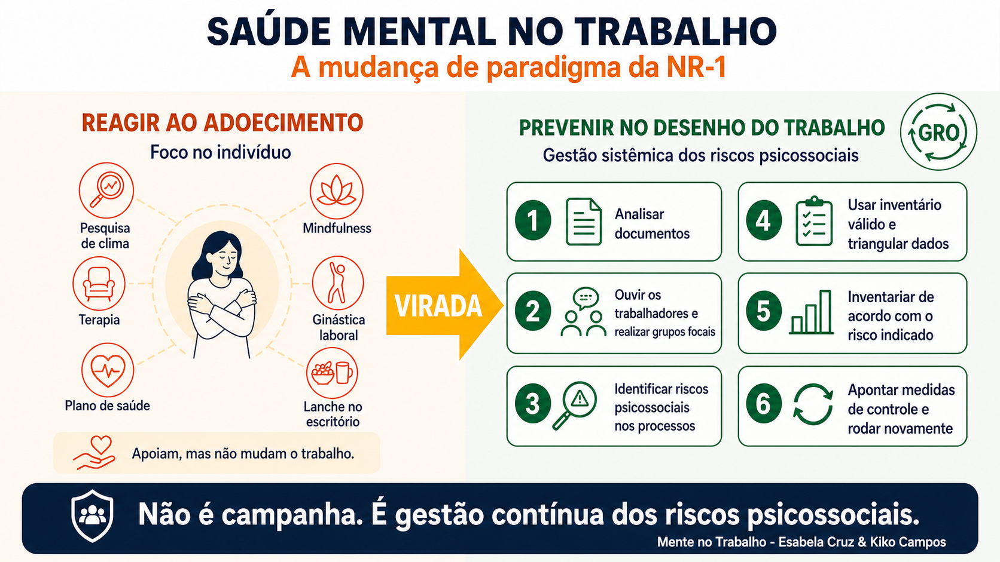

Oito conversas sobre saúde mental no trabalho
A temporada inteira num só lugar: as oito lives na íntegra, os melhores momentos, o e-book, o workbook e os guias práticos para o líder e para o RH.
- Temporada 1 completa
- ≈ 30 min por episódio
- Kiko Campos & Esabela Cruz


As 8 edições em um arquivo só — e um workbook para preencher
O e-book é para ler: o mapa da temporada, o manifesto e os quatro guias práticos, em 41 páginas. O workbook é para fazer: oito módulos e o seu Plano de Segunda-feira. Um e-mail leva os dois.
Ver o que tem dentro ↗41 páginas. Comece pelo mapa da temporada, na página 4.
Agora abra o workbook e preencha o seu Plano de Segunda-feira ↗
Cultura humanizada: o que fica quando a live acaba
Exibida em 21/08 · a 8ª e última edição da 1ª temporada · com Kiko Campos & Esabela Cruz
Nesta edição: a costura das 8 lives, os quatro sinais de que a mudança pegou — e os três de que ela vai morrer —, o manifesto da cultura humanizada e o que dá para fazer sem orçamento novo. A temporada 2 vem; quem deixar o e-mail sabe primeiro.
As lives na íntegra
Cada episódio é uma conversa de ~30 minutos sobre um tema real da saúde mental no trabalho. Assista quando quiser.
Riscos psicossociais entram na lei
O que o STF e a NR-1 mudam para as empresas — e por que a saúde mental deixou de ser tema de bem-estar para virar obrigação de gestão.
A conversa que ninguém ensinou o líder a ter
Os 4 E's — Enxergue, Escolha o espaço, Escute e Encaminhe. Um método simples para o líder abordar saúde mental com o time sem virar terapeuta.
Os sinais precoces de burnout
O que o líder consegue enxergar antes do afastamento — os 3 sinais, os 3 P's e o que fazer com cada um sem virar terapeuta.
Além do líder herói
Como transformar o cuidado em cultura — e não no esforço de uma pessoa só. Os 4 casos, o estudo de Oxford e a chave tangível × intangível.
NR-1 sem pânico: o mapa do RH
A fiscalização já começou. Saúde mental virou gestão de risco psicossocial — não programa, e sim gestão contínua e compartilhada, em 4 etapas e um plano de 90 dias.
O caso de negócio do bem-estar
Como o RH convence o board: as três contas que colocam bem-estar no resultado — absenteísmo, presenteísmo e rotatividade — e o piloto de 90 dias que prova o retorno.
A virada na prática: histórias reais
Três histórias reais do chão da operação — onde a virada travou, o que mudou de fato e o que sobreviveu ao primeiro "não cabe na minha meta". Com o Diagnóstico de Maturidade NR-1 ao vivo.
Cultura humanizada: o que fica quando a live acaba
O fecho da temporada: a costura das oito edições, os quatro sinais de que a mudança pegou — e os três de que ela vai morrer —, o manifesto da cultura humanizada e o que dá para fazer sem orçamento novo.
Clipes para assistir e compartilhar
Trechos curtos das conversas, organizados por episódio — escolha a live e aperte o play.
A virada na prática: histórias reais · 5 clipes
Assistir à live na íntegra ↗ ▶
▶Toda empresa tem o slide. Poucas têm a virada.
"Plano aprovado não é virada. Virada é o que sobrevive ao primeiro 'não cabe na minha meta'" — a manchete da Live 7.
 ▶
▶O gerente que fechava a loja às 23h e abria às 7h
No pico de dezembro, virou afastamento por ansiedade em janeiro — e a regra de uma linha, sem custo de folha, que sobreviveu ao dezembro seguinte.
 ▶
▶"Perda operacional" era adoecimento com outro nome
O custo já estava lançado no P&L da loja — só que na linha errada. A pergunta que todo CFO devia fazer: por que essa conta nunca chegou na minha mesa?
 ▶
▶Três movimentos sem orçamento novo
Um dono com nome e sobrenome, uma mudança real na organização do trabalho e o indicador na reunião que já existe. "Quem quer fazer tudo, muitas vezes não faz nada."
 ▶
▶Seu índice de maturidade NR-1 em 4 minutos
O Diagnóstico de Maturidade NR-1 apresentado ao vivo — 15 perguntas, 5 dimensões, índice de 0 a 100 na hora.
O caso de negócio do bem-estar · 8 clipes
Assistir à live na íntegra ↗ ▶
▶Quando o pedido de RH morre na reunião
O projeto era bom — mas não chegou em linguagem de negócio.
 ▶
▶A obrigação continua, a multa está suspensa
NR-1: o que mudou de fato — e o que não mudou.
 ▶
▶As três contas que colocam bem-estar no balanço
Afastamento, turnover e presenteísmo: a matemática do board.
 ▶
▶O custo oculto do presenteísmo
Está presente, não entrega — e não aparece em nenhum relatório.
 ▶
▶Cada US$ 1 retorna US$ 4
Como comprovar ROI sem inventar número.
 ▶
▶O piloto de 90 dias
Uma área, um número, um prazo — por onde o RH começa.
 ▶
▶Apaixone-se pela perda que deixou de acontecer
O valor que ninguém aplaude é o que mais pesa no resultado.
 ▶
▶Uma página convenceu o board em 60 dias
O que estava nela — e por que funcionou.
NR-1 sem pânico: o mapa do RH · 8 clipes
Assistir à live na íntegra ↗ ▶
▶Quando o RH entra em pânico
A NR-1 chegou e o RH travou — o caso da Patrícia.
 ▶
▶Transformar risco em gestão
O papel do RH: puxar a gestão compartilhada do risco psicossocial.
 ▶
▶O que mapear: os fatores
Os FRPRT e a metodologia do inventário — instrumento técnico, não clima.
 ▶
▶O estudo de Oxford
46 mil trabalhadores: programa individual quase não muda nada.
 ▶
▶O checklist na prática
Inventário, avaliação e plano de ação — as etapas do mapa.
 ▶
▶Do pânico à bússola
Do susto ao plano: o checklist que dá direção ao RH.
 ▶
▶O plano de 90 dias
Enxergar, decidir e mover — o mapa em 90 dias.
 ▶
▶Bem-estar é resultado, não custo
Transformar o mapa em número — a ponte para o board.
Além do líder herói · 8 clipes
Assistir à live na íntegra ↗ ▶
▶Quando o líder-herói se cansa
Marcos segurava o time inteiro sozinho — até cansar.
 ▶
▶Programas individuais quase não mudam nada
Oxford, 46 mil trabalhadores: o que muda é o desenho do trabalho.
 ▶
▶Do app de meditação à pausa real
No call center, a pausa de verdade vale mais que o aplicativo.
 ▶
▶O quase-acidente e a escala
O problema não era o operador — era a dobra de turno.
 ▶
▶Como abordar um funcionário em risco
O jeito certo e o jeito errado — na cena, não na teoria.
 ▶
▶Quando a liderança ignora os sinais
O que acontece quando o líder vê — e escolhe não agir.
 ▶
▶O custo do silêncio
Não fazer nada também é uma escolha — e ela tem preço.
 ▶
▶Tirar o trabalho do herói
Passos práticos para o cuidado virar sistema, não esforço de um.
Os sinais precoces de burnout · 7 clipes
Assistir à live na íntegra ↗ ▶
▶Os 3 sinais precoces
O que o líder enxerga antes do afastamento.
 ▶
▶É o trabalho que adoece
O burnout nasce da organização, não da pessoa.
 ▶
▶Os 3 P's
Padrão, pausa e prioridade: o que o líder observa.
 ▶
▶O que é burnout
As três dimensões — muito além do cansaço.
 ▶
▶Por que nasce do trabalho
São as condições que adoecem — antes da pessoa.
 ▶
▶Ajuste o trabalho, não as pessoas
Cultura é redesenhar o trabalho, não exigir resiliência.
 ▶
▶O medo de falar
Por que o time silencia — e como o líder abre a porta.
A conversa do líder — os 4 E's · 8 clipes
Assistir à live na íntegra ↗ ▶
▶546 mil afastamentos
O recorde de 2025 no INSS que mudou a conversa.
 ▶
▶Líder não é terapeuta
“Precisa ser humano com método.”
 ▶
▶Enxergue
É mudança de padrão, não diagnóstico.
 ▶
▶Escute
Sem resolver, sem minimizar, sem prometer sigilo.
 ▶
▶Encaminhe
PAE / RH-SST e follow-up em uma semana.
 ▶
▶Feedback contínuo
A conversa que não pode esperar a crise.
 ▶
▶Ataque à raiz
Cinco minutos que evitam meses de afastamento.
 ▶
▶Não precisamos de heróis
Encaminhar é responsabilidade, não fraqueza.
Riscos psicossociais entram na lei · 8 clipes
Assistir à live na íntegra ↗ ▶
▶Percepção divergente
95% dos líderes × 15% dos funcionários: a régua do cuidado.
 ▶
▶Conversa semanal de 10 minutos
O ritual simples que muda a relação líder–time.
 ▶
▶STF suspendeu as multas
Por que tratar isso como alívio pode ser um erro.
 ▶
▶Presenteísmo e custos
Saúde mental é pauta de resultado, não de benefício.
 ▶
▶Programas não bastam
Sem ajuste estrutural, o programa vira paliativo.
 ▶
▶O primeiro passo
Entender como as pessoas realmente trabalham.
 ▶
▶Autonomia e recursos
O que o líder deve garantir para o time.
 ▶
▶Análise ergonômica viva
Como transformar diagnóstico em plano de ação.
Uma dupla, uma conversa
Toda sexta, os dois lados da mesma mesa — gestão e cuidado, dados e escuta.
Kiko Campos
Executivo de RH e CHRO com passagens por Vale, Carrefour, Grupo Big e Walmart Brasil. Advisor de CEOs e conselhos em cultura, liderança e transformação.
Esabela Cruz, MSc
Psicóloga do Trabalho, especialista em saúde mental e riscos psicossociais (NR-1), com atuação em cultura, DEI e formação de lideranças em multinacionais na América Latina.
Biblioteca
Tudo o que a série produziu — organizado por quem você é na segunda-feira de manhã.
O e-book da 1ª temporada
As 8 edições em um arquivo só — 41 páginas
O que sobra de uma série não é o vídeo: é o que dá para usar na segunda-feira. O mapa da temporada, o manifesto e os quatro guias reeditados — os 4 E's do líder, o Guia do Líder, o checklist da NR-1 e o caso de negócio do bem-estar.
- O mapa das 8 edições
- Os 4 E's da conversa do líder
- Checklist da NR-1 e os FRPRT
- As 3 contas que o board respeita
E o workbook, para preencher
O e-book é para ler; este é para fazer. Oito módulos interativos, um por edição — e no fim o seu Plano de Segunda-feira: o que muda, quem é o dono, qual número e em que data. Abre no navegador, e o que você escreve fica salvo.
- 8 módulos, um por edição
- Calculadora das 3 contas
- Plano de Segunda-feira
- Imprime em PDF
Se você lidera um time
A conversa e o redesenho do trabalho.
PDFWorkbook dos 4 E’sA conversa do líder, passo a passo · Live 2Baixar ↗ PDFGuia do Líder: 4 casosDo caso real ao botão que resolve · Live 4Baixar ↗Se você é RH ou SESMT
Do susto da norma ao plano de ação.
PDFChecklist NR-1Os primeiros passos do RH — 4 etapas + 90 dias · Live 5Baixar ↗ PDFDeck da Live 5O mapa da NR-1 em 4 etapas · Live 5Baixar ↗Se você vai falar com o board
A tradução para a língua do orçamento — e a prova em números.
FerramentaDiagnóstico de Maturidade NR-1 novo15 perguntas, seu índice de 0 a 100 na hora · Live 7Fazer ↗ PDFO caso de negócio do bem-estarAs 3 contas, os 5 números e o pitch de uma página · Live 6Baixar ↗“O líder não precisa ser terapeuta. Precisa ser humano com método.”

A newsletter “Humanize-se”
O essencial da conversa em texto, toda semana: o tema da live, os dados por trás dele e o que fazer com isso na segunda. +39 mil pessoas.